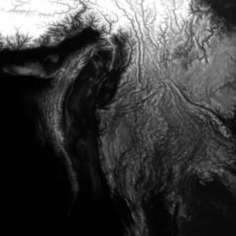
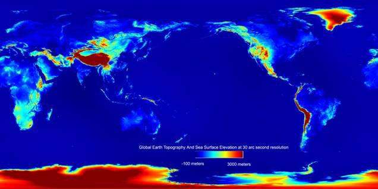

| GETASSE30 Elevation Model | |
GETASSE30 stands for Global Earth Topography And Sea Surface Elevation at 30 arc second resolution. This elevation model is currently BEAM's default DEM and has kindly been provided to the BEAM development team by Marc Bouvet (marc.bouvet@esa.int) of ESA/ESRIN. This documentation is also by courtesy of Marc Bouvet.
Because of its size, the BEAM installer will not automatically install the GETASSE30 DEM files. But at first use VISAT will offer to download the DEM for you, alternatively the GETASSE30 dataset can be manually downloaded from the BEAM home page at http://envisat.esa.int/services/beam/. The size is about 300 MB zipped and 2.3 GB unzipped. Due to the file size, we recommend this only if your internet connection is fast enough. If you like to install by yourself, please follow the instructions given here:
GETASSE30.zip from the BEAM home page.${BEAM-INSTALL-DIR}/auxdata/dem/GETASSE30GETASSE30.zip and copy the files into
${BEAM-INSTALL-DIR}/auxdata/dem/GETASSE30/.
If you like to share the DEM along multiple BEAM installations in your network or if simply don't want to install in BEAM's auxdata folder, then:
${SHARED_GETASSE30} from now on.${BEAM-INSTALL-DIR}/auxdata/dem/GETASSE30/ and open the
new
file in a text editor. dem.installDir = ${SHARED_GETASSE30}
${SHARED_GETASSE30} by your actual, shared DEM installation path. The properties file format
requires to esacpe the backspace and colon characters using a backslash. Hence, on windows systems you'll
have
to escape the drive colon and file separator, e.g. dem.installDir =
P\:\\Data\\DEMs\\GETASSE30.
GETASSE30 is a composite of four other DEM datasets. It is using the SRTM30 dataset, ACE dataset, Mean Sea Surface (MSS) data and the EGM96 ellipsoid as sources. The resulting GETASSE30 dataset represents the Earth Topography And Sea Surface Elevation with respect to the WGS84 ellipsoid at 30 arc second resolution. The dataset has no missing values, but at the junction of the arctic and antarctic continents there are some tens of strange negative values (down to -700 m) inherent to the ACE dataset. All latitude/longitude values refer to the center of a pixel, not to one of its corners. The GETASSE30 dataset is organised as multiple tiles. Each tile is stored in associated file which can be imported into VISAT using the GETASSE30 Reader. (This reader is also internally used by the Orthorectification algorithm.)

Example of a GETASSE30 tile
| Resolution: | 30 arc second latitude and longitude |
| Unit: | meter |
| File name example: | 45S045W.GETASSE30 where the first number is the latitude of the most South West pixel and the second number its longitude |
| Data format: | binary, 1800*1800 signed 16-bit integer values, big endian order |

The GETASSE30 elevation data
| Resolution: | 30 arc second latitude and longitude |
| Unit: | none |
| File name example: | 45S045W.GETASSE30_flag where the first number is the latitude of the most South West pixel and the second number its longitude |
| Data format: | binary, 1800*1800 unsigned 8-bit integer values, big endian order |

The flag associated to the GETASSE30 data